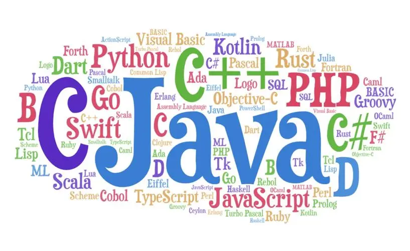

编程语言百科
编程语言（programming language）可以简单的理解为一种计算机和人都能识别的语言。 一种计算机语言让程序员能够准确地定义计算机所需要使用的数据， 并精确地定义在不同情况下所应当采取的行动。
编程语言处在不断的发展和变化中，从最初的机器语言发展到如今的2500种以上的高级语言， 每种语言都有其特定的用途和不同的发展轨迹。编程语言并不像人类自然语言发展变化一样的缓慢而又持久， 其发展是相当快速的，这主要是计算机硬件、互联网和IT业的发展促进了编程语言的发展。
本网站旨在普及计算机科学知识，为大家提供一个了解计算机编程语言的平台。 在“编程语言”栏目中，您可以了解各种编程语言的发展历程和语言特性。 在“时间线”栏目中，您可以看到各种编程语言发展的时间顺序。 在“留言板”栏目中，您可以为本站的建设提出宝贵意见。
感谢您对本站的支持！